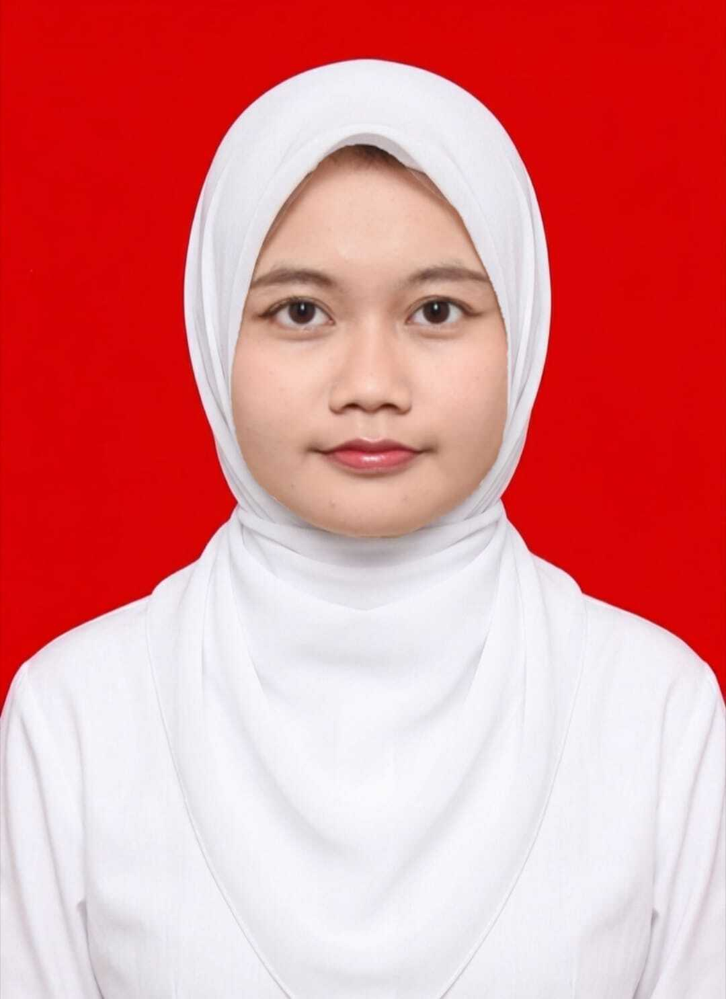

Halo, saya Davina

Lulusan S1 Sistem Informasi Universitas Pamulang (IPK 3,79) dengan pengalaman di seluruh tahap pengembangan sistem: analisis kebutuhan, pemodelan UML dan ERD, mockup antarmuka, pengembangan web dengan PHP (native dan Laravel) serta MySQL, dan pengujian otomatis dengan Selenium. Membangun sistem informasi pengolahan nilai berbasis website untuk SMK sebagai skripsi, dan merancang sistem presensi QR Code saat praktik kerja.
Telah menjalani magang di Sekretariat Jenderal Komnas HAM, menilai kualitas website dengan metode SAW dan membantu pemantauan server. Pemegang Sertifikat Kompetensi Programmer dari BNSP. Terbiasa menyusun dokumentasi teknis yang jelas dan bekerja dengan metode Agile. Saat ini mencari posisi di tim TI, seperti pengembangan web, analisis sistem, atau pengujian perangkat lunak, untuk mengubah kebutuhan pengguna menjadi sistem yang andal dan terdokumentasi dengan baik.
- Analisis kebutuhan
- UML
- ERD
- UI mockup
- Dokumentasi teknis
- Agile
- PHP
- Python
- Laravel
- MySQL
- Black Box Testing
- Selenium
- Microsoft Office